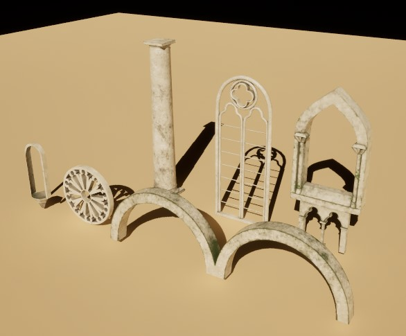
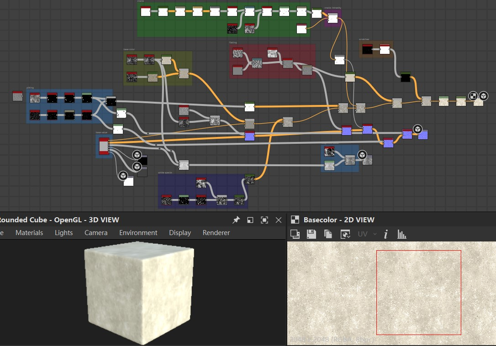
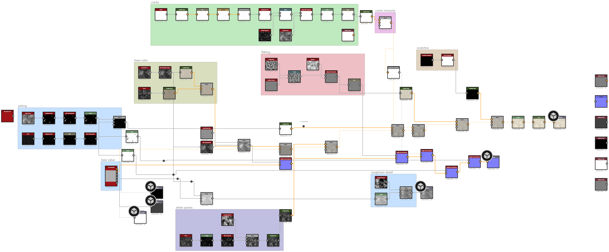
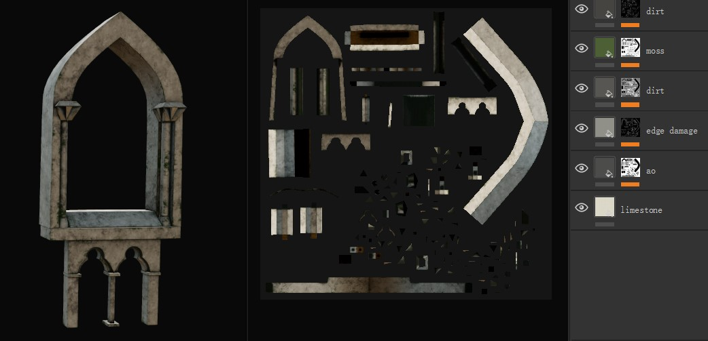
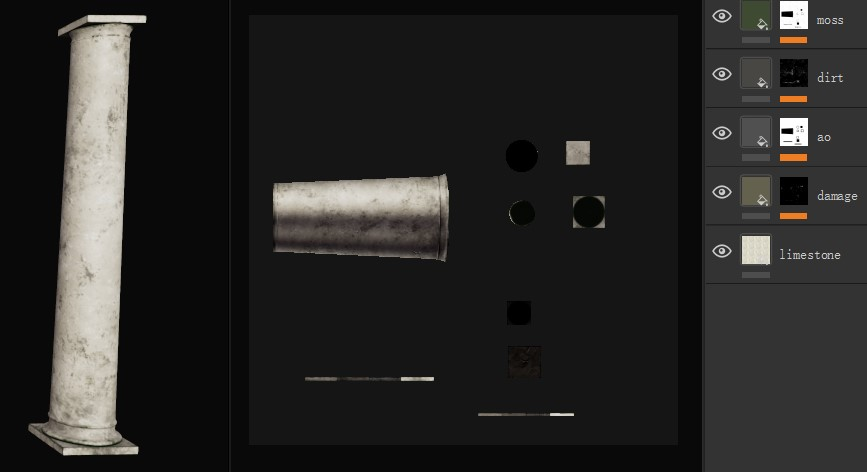
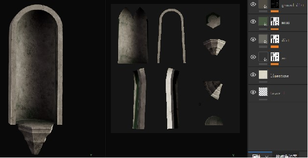
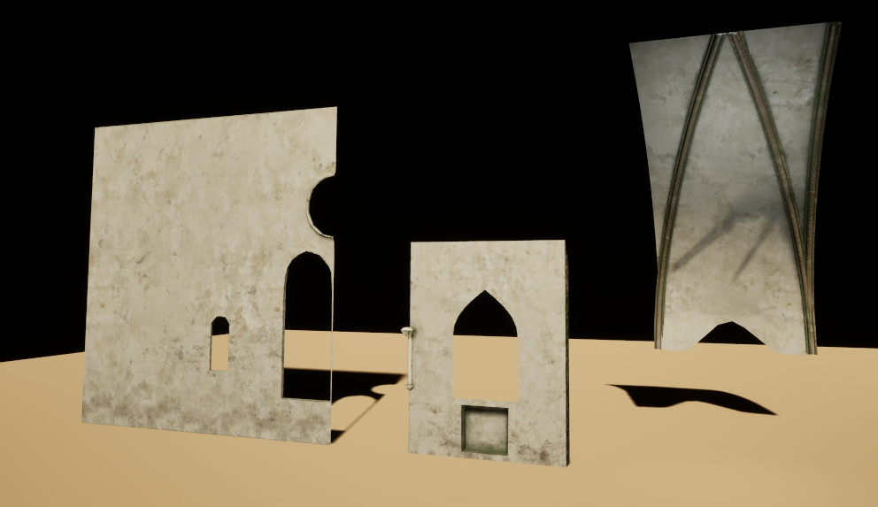
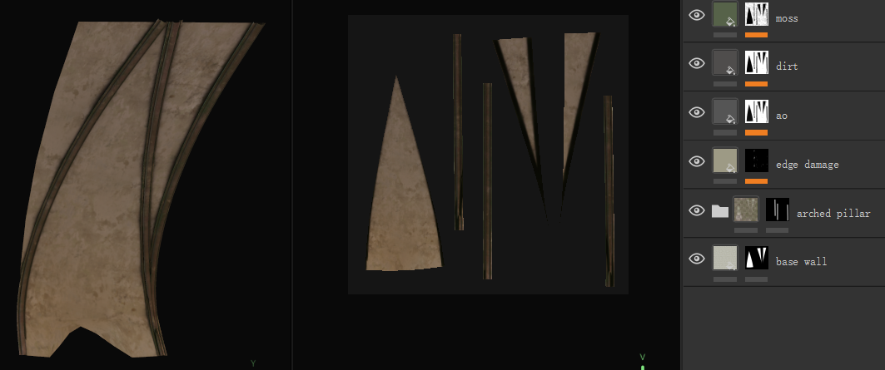
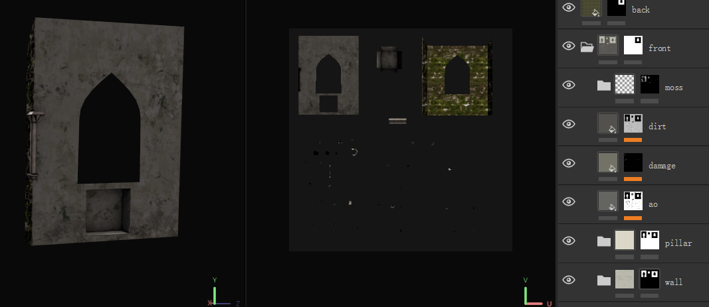
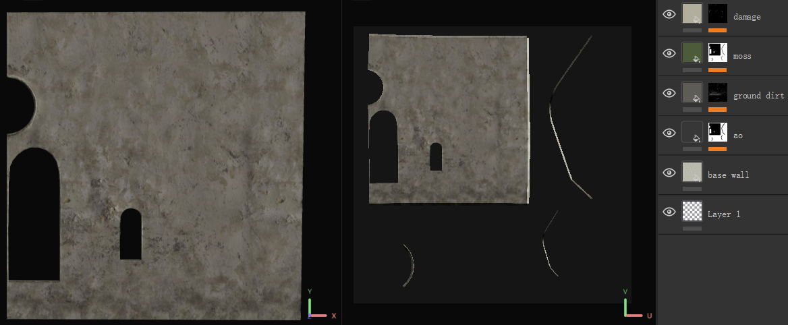

03. Procedural Material Creation
The materials shown below represent selected highlights from the full material set created for this project.
Asset Set I: Limestone Set
The base material was authored in Substance 3D Designer and then refined in Substance 3D Painter to add surface variation, edge wear, and object-specific details.


High-level graph overview in Substance 3D Designer.

Full node graph export.

Overview in Substance 3D Painter.


Asset Set II: Stained Glass
The stained glass material was created by first building a clean base-glass shader and then driving color, roughness, and light scattering through parameterized masks painted in the UV layout.

 Low-Light material preview.
Low-Light material preview.
 UV mask layout.
UV mask layout.
Asset Set III: Wall
The wall materials were built entirely inside Substance Painter by blending multiple smart materials, procedural masks, and custom paint layers, instead of using a Substance Designer master material.



